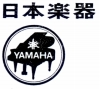
YAMAHA （ヤマハ）
1897（明治30）年設立の楽器・AV機器メーカー。1987（昭和62）年現在の社名に変更。オートバイ等の「ヤマハ」は「ヤマハ発動機」であり、現在では当社との株式の所有関係は薄れている。ヘッドフォンメーカーとしてはオルソダイナミック型ヘッドフォンで有名。またイタリア人工業デザイナー、マリオ・ベリーニによるヘットバンドをフレーム部分と、ヘッドパッド部分に分けたデザインは、その後の国産ヘッドフォンに大きな影響を与えた（それ以前の国産ヘッドフォンではヘッドパッドが独立したモデルはほとんど存在しなかった）。
1970年以前の製品についてはよくわからないが、1973年当時の製品は「ＨＰ」で始まる型番であった。オルソダイナミック型の製品グループは「HP」、「YH」、「YHD」型番の製品がある。またオルソダイナミック型導入後の通常のヘッドフォンで「YHL」型番の製品がある。現在（2021年）では、「HPH」の型番を使っているようだ。
YAMAHA （ヤマハ）の製品を以下のように分類する。（この分類は個人的な意見で、メーカーの分類ではありません）
�T.オルソダイナミック型以前のモデル
コーン型ヘッドフォンと思われる製品群。白いボディである他は、他社の製品と比較して、これといった特徴はない。
HP-300 HP-500 HP-700 （4ch機） QHP-400
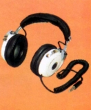
（HP-700)
＊ヤマハの古いヘッドフォンについて
年式は不明だが「YAMAHA NS
SERIES」と記入された8Ω仕様のカールコードのグレイのヘッドフォンを見かけたことがある。またエレクトーン用で「JB0022」と「JB0029」というオレンジ色のヘッドフォンもオークションで見かけた。
�U.オルソダイナミック型のモデル
�@オルソダイナミック型導入期のモデル
1975年頃にフォステクスのT50とともに国産の動電全面駆動型ヘッドフォンの先駆けともいえるベリーニデザインのHP-1及び2がデビューした。HＰ-1は当時としてはバランスの良い性能でベストセラーとなった。またジュニアモデルであるHP-2はブラックの他、レッドブラウン・グリーン・クリームのカラーバリエーションがあり、この時代では極めて珍しい。（管理人が知っている範囲では前例はゼンハイザーのHD-414ぐらいである）
なおHP-1とHP-2の差異にはユニットの口径の他、使用する磁石の製法（HP-1＝異方性フェライト、HP-2＝等方性フェライト）があり、こうした差別化はヤマハでは後のYHD-1/YHD-2でも見られ、他社ではビクターのダイナフラット型にもあった。
（動電全面駆動型） HP-1 HP-2 (HP-1とHP-2の比較）
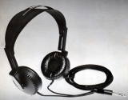
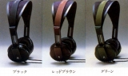
（左 HP-1 右 HP-2のカラーバリエーション)
＊オルソダイナミック型の開発者について
ヤマハ以外でオルソダイナミック型を名乗るメーカーにはPEERLESS
（ピアレス）がある。当時の広告等を見るとピアレスの方が「本家」のような印象を受ける。ヤマハは「オルソダイナミック型」自体については、発売当時からカタログで「特許」「開発」「発明」等の言葉を使っていない。
現時点では、明確な判断はできないが、最近(2013年5月）入手したデンオン（現デノン）のカタログの記載から、当サイトではPEERLESS （ピアレス）の方を「オルソダイナミック型」のオリジネーターと判断した。デンオンのカタログには「特許」と表現され、また基本構造がヤマハと酷似しており、さらに上位モデル（ヤマハ＝HP-1、ピアレス＝PBM-8）が55�o径のダイヤフラムに5層コイル、下位モデル（ヤマハ＝HP-2、ピアレス＝PBM-6）が46�o径のダイヤフラムに4層コイル、と共通であった。（ただし使用しているベースフィルム厚や磁石の磁束密度は違うので、全く同じではないようだ。）
（左がピアレスの構造図、右がヤマハの構造図）
 （1978年6月版DENONアクサアリーカタログ）
（1978年6月版DENONアクサアリーカタログ）
�Aオルソダイナミック型発展期のモデル
1970年代後半はHP-1/2で確立した路線の拡大が行われた。HP-2に近いグレードのドライバーを自社デザインの簡素な筐体に納めた廉価版がHP-3、この当時の動電全面駆動型ヘッドフォンでは珍しい希土系マグネットを採用したハイエンドモデルHP-1000である。次いで、「YH」型番のものが登場する。YH-5Mは希土系マグネットの小口径（20�o）ユニットを採用したユニークな機体。YH-100はHP-1の改良型といえる機種で、フェライト磁石の製法（HP-1＝乾式異方性フェライト、YH-100＝湿式異方性フェライト）を替えて磁束密度の向上を図ったモデル。
（動電全面駆動型） HP-3 HP-1000 YH-5M YH-100
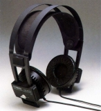
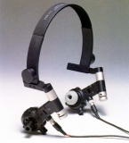
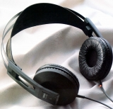
（左 HP-1000 中央 YH-5M 右 YH-100)
�Bオルソダイナミック型終末期のモデル
1970年代後半にはかなりの機種数があった動電全面駆動型ヘッドフォンだが、1980年代に入り通常のダイナミック型が希土系マグネットの導入や振動系の軽量・高剛性化による性能向上を果たすと、フォステクスを残し、次第に姿を消していった。ヤマハのオルソダイナミック型最後のシリーズが「YHD」型番のもの。YHD-1/2は再びマリオ・ベリーニのデザインを採用。しかし希土系マグネットの採用等はなく、ドライバーは小口径化し、前シリーズを上回る性能はもっていない。YHD-3はHP-2に対するHP-3に該当する廉価モデル。
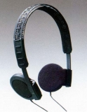
（YHD-1)
�V.YHLシリーズ
オルソダイナミック型発売以降の通常モデルが「YHL」型番のモデルである。YHL-005/007は1980年代初頭の小型・軽量機ブームに出したモデルで他社の同クラス製品と比較して、これといった特徴を持たない。YHL-003/006はポルシェデザインを採用したユニークな折りたたみ型。
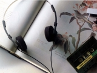
（YHL-005)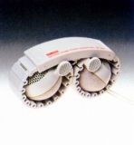
（YHL-006)
�W.（番外）電子楽器モニター用モデル
楽器メーカーとしての側面を持つヤマハはエレクトーンなど電子楽器用に廉価版のオルソダイナミック型をベースにしたモニター用モデルを用意していた。現時点では販売時期や価格は不明。HP-50は現時点で最も入手しやすいオルソダイナミック型モデルである。ステレオタイプとモノラルタイプが存在する。
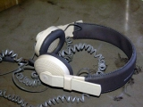
(YHE-50)また1990年代にヤマハはオーディオ分野を縮小した。しかし、YHD/YHLシリーズでオーディオ用ヘッドフォンから撤退した後も、電子楽器モニター用のヘッドフォンなどは用意していた。ただしヤマハの独自色は薄いOEMモデルと思われる。
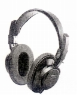
(RH-40M)
＊その他のヤマハのヘッドフォンについて
テクニカのATH-20、30、50シリーズ風のヘッドバンド・カプセルを持つヘッドフォンで「YHE-5」というヘッドフォンが存在する。ネットの情報ではエレクトーン用らしい。その他「HPE」型番の製品も見かけるが詳細は不明。